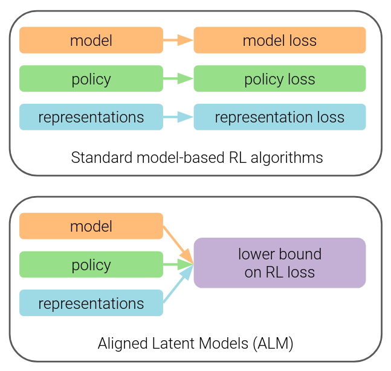

I am a research intern at Mila, advised by Glen Berseth. During my undergraduate, I worked on
model-based RL, with Ben Eysenbach. I studied
engineering from VNIT Nagpur.
My research studies reinforcement learning, aiming at building autonomous agents that make
decisions. To achieve this, agents should learn to abstract their world, both temporally and
spatially, by learning latent representations, skills and models of the world.
Research
Please refer to Google Scholar
for a complete list of my publications.

Simplifying Model-based RL: Learning Representations, Latent-space Models and Policies with One Objective
Raj Ghugare,
Homanga Bharadhwaj,
Benjamin Eysenbach,
Sergey Levine,
Ruslan Salakhutdinov
We present a joint objective for latent space model based RL which lower bounds the RL objective.
Maximising this bound jointly with the encoder, model, and the policy boosts sample efficiency, without using
techniques like ensembles of Q-networks and a high replay ratio.
ICLR 2023
[project page,
paper]
The code for this website was directly ported from Jon Barron.
{kind=link}